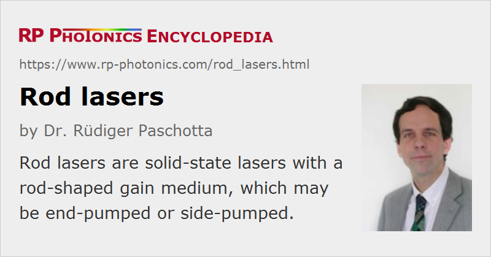

Rod Lasers
Definition: solid-state lasers with a rod-shaped gain medium
More general term: solid-state lasers
German: Stablaser
How to cite the article; suggest additional literature
Author: Dr. Rüdiger Paschotta
Most solid-state lasers are rod lasers, i.e. lasers with a rod-shaped doped laser crystal as the gain medium. Strictly, a rod always has a cylindrical shape, but the term is sometimes also used for crystals with rectangular shapes. Its ends are normally either perpendicular to the beam axis, or are Brewster-angled for suppressing parasitic reflections and ensuring a stable linear polarization.
Rod lasers can be either end-pumped or side-pumped. Cooling is simplest for end pumping, where the outer surface can be fully surrounded by a water-cooled heat sink. However, there are also various options for side pumping. For a lamp-pumped laser, for example, a pump chamber as shown in Figure 1 can be used. Here, the rod is cooled with water, which transmits the pump radiation from the flash lamp or arc lamp. The rods used in such lasers are normally several centimeters long, corresponding to the length of the lamps, and have a low doping concentration. Obviously, there are some technical issues e.g. concerning how to exchange lamps or rods conveniently. The laser resonator should be made so that most of the volume of the rod is filled by the lasing resonator modes. A rod with larger diameter helps to achieve better pump absorption, but may make it more difficult to obtain a good beam quality.

Another possibility, used for some diode-pumped high-power lasers, is to inject pump light from laser diodes through slits in a reflector coating around the rod (Figure 2), and cool the outer surface of that reflector. A diffuse reflector helps to obtain a smoother pump intensity profile. By imaging the fluorescence from the pumped rod, the pump intensity profile can be monitored.
An essential property of rod lasers is that the dissipated heat is dominantly extracted in directions perpendicular to the beam axis. An important consequence of this is that thermal lensing effects inevitably become strong for high output power levels. However, there are cryogenic lasers based on laser rods which can nevertheless deliver fairly high powers, mainly because the thermal conductivity of a solid-state medium is usually very high at cryogenic temperatures. There are also various techniques for mitigating the thermal effects in a laser rod. For example, it is possible to use composite laser crystals with undoped caps, or multi-segmented rods having sections with different doping levels in order to distribute the generated heat more smoothly.
One or several rods can be used in a single laser resonator. With multiple rods, the laser gain is higher, allowing for a higher degree of output coupling; the intracavity power can be similar to that for a single-rod laser. The effects of thermally induced aberrations from the different rods do not necessarily add up; this is a matter of resonator design.
An extreme case of a laser rod is that of a single-crystal fiber. Such fibers can be directly pulled from a melt, with no subsequent polishing except for the input and output end. They do not contain a waveguide structure for the laser light, but they guide the pump light, which is reflected at the air–glass interface.
Among solid-state lasers, the most important alternatives to rod lasers are slab lasers and thin-disk lasers, apart from microchip lasers.
Questions and Comments from Users
Here you can submit questions and comments. As far as they get accepted by the author, they will appear above this paragraph together with the author’s answer. The author will decide on acceptance based on certain criteria. Essentially, the issue must be of sufficiently broad interest.
Please do not enter personal data here; we would otherwise delete it soon. (See also our privacy declaration.) If you wish to receive personal feedback or consultancy from the author, please contact him e.g. via e-mail.
By submitting the information, you give your consent to the potential publication of your inputs on our website according to our rules. (If you later retract your consent, we will delete those inputs.) As your inputs are first reviewed by the author, they may be published with some delay.
Bibliography
| [1] | S. C. Tidwell et al., “Scaling CW diode-end-pumped Nd:YAG lasers to high average powers”, IEEE J. Quantum Electron. 28 (4), 997 (1992), doi:10.1109/3.135219 |
| [2] | S. Konno et al., “80 W cw TEM00 beam generation by use of a laser-diode-side-pumped Nd:YAG rod laser”, Appl. Phys. Lett. 70 (20), 2650 (1997), doi:10.1063/1.118985 |
| [3] | H.-J. Moon et al., “Efficient diffuse reflector-type diode side-pumped Nd:YAG rod laser with an optical slope efficiency of 55%”, Appl. Opt. 38 (9), 1772 (1999), doi:10.1364/AO.38.001772 |
| [4] | Y. Hirano et al., “208-W TEM00 operation of a diode-pumped Nd:YAG rod laser”, Opt. Lett. 24 (10), 679 (1999), doi:10.1364/OL.24.000679 |
| [5] | E. C. Honea et al., “High-power dual-rod Yb:YAG laser”, Opt. Lett. 25 (11), 805 (2000), doi:10.1364/OL.25.000805 |
| [6] | H. Bruesselbach and D. S. Sumida, “A 2.65-kW Yb:YAG single-rod laser”, J. Sel. Top. Quantum Electron. 11 (3), 600 (2005), doi:10.1109/JSTQE.2005.850600 |
See also: solid-state lasers, lamp-pumped lasers, thin-disk lasers, slab lasers, microchip lasers, end pumping, side pumping, gain media
and other articles in the category lasers
|  |
If you like this page, please share the link with your friends and colleagues, e.g. via social media:
These sharing buttons are implemented in a privacy-friendly way!